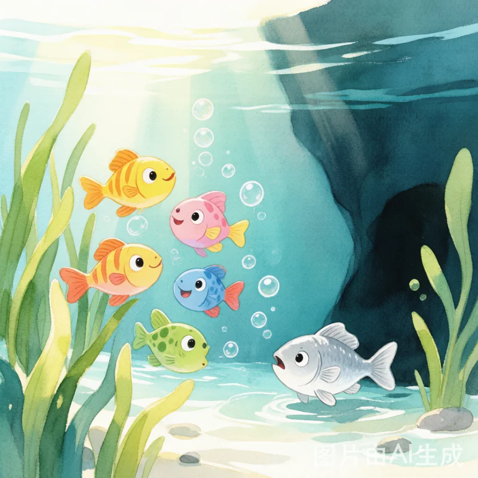
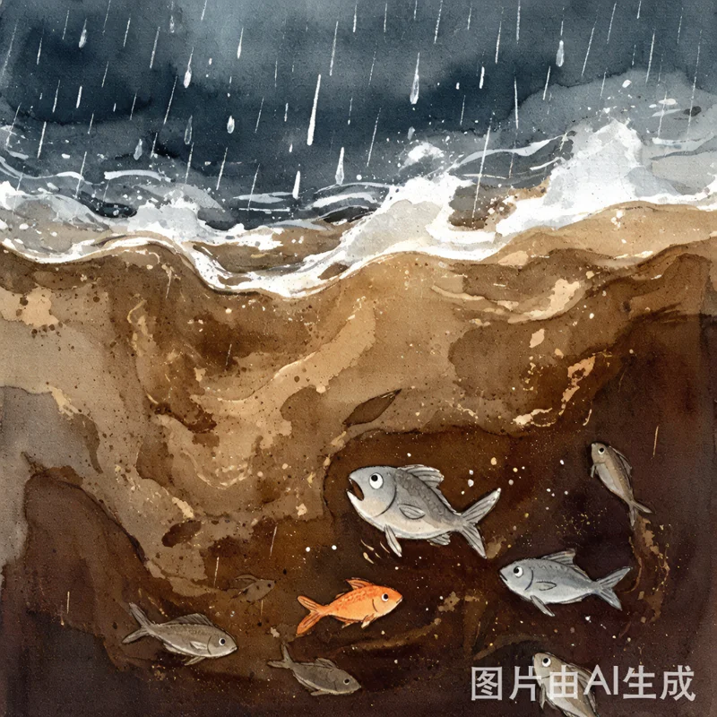
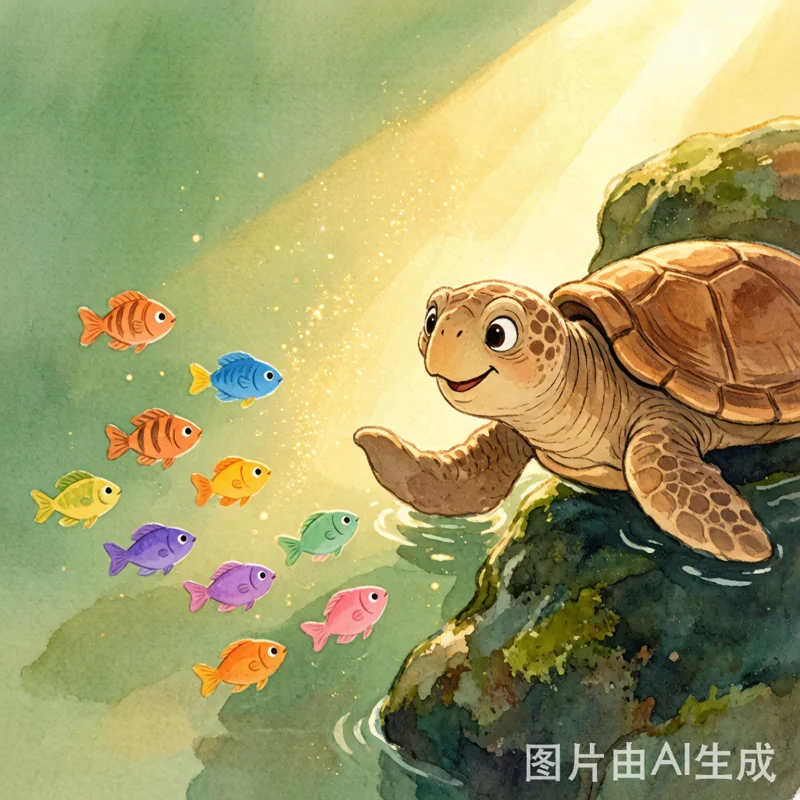
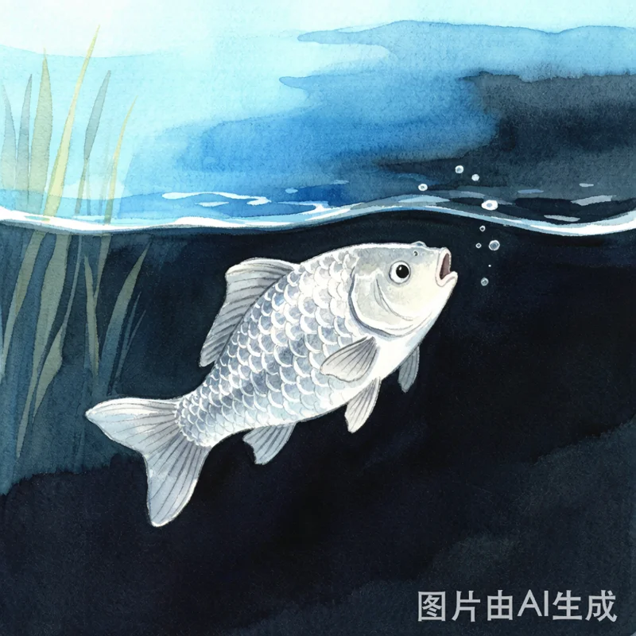
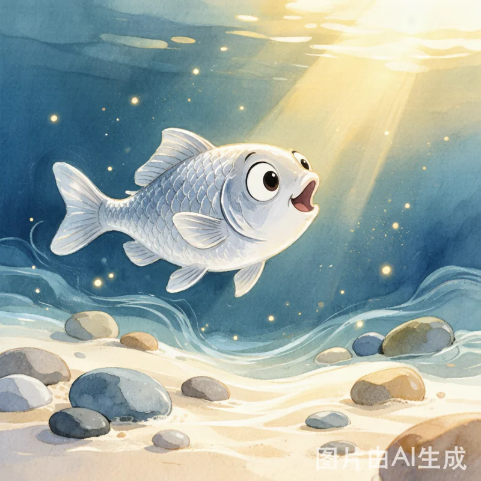
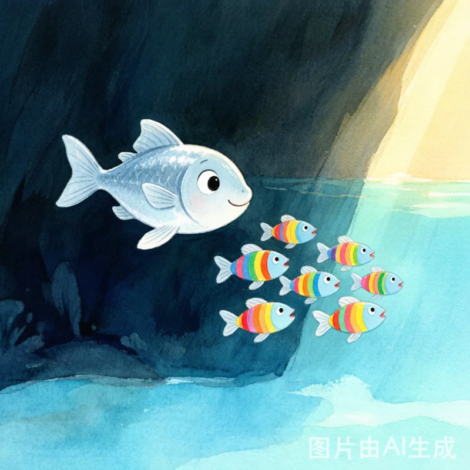

小河与勇敢的小鱼
一个关于勇气与成长的故事

在一条清澈的小河里，住着一条名叫小银的鱼。小银有着闪闪发光的鳞片，是整条河里最漂亮的小鱼。
小银每天都和朋友们在河里玩耍——捉迷藏、吐泡泡比赛、在水草间穿梭嬉戏。可是，小银心里一直有个小小的秘密：她害怕水里的暗影。
每当阳光照不到的地方，河水变得深暗，小银就会紧张地缩起尾巴，赶紧游回浅水区。

有一天，一场大雨突然来了。雨点啪啪地打在水面上，河水变得浑浊，上游冲下来许多泥沙。小河变得又暗又急，小鱼们都被吓坏了。
"怎么办？水越来越急了！"一条小金鱼着急地说。
大家你看看我，我看看你，谁也不敢往上游——因为上游更暗、更深，谁也不知道那里是什么样子。

这时，最老最聪明的龟爷爷慢慢爬了出来，用沙哑的声音说："孩子们，上游有一片安静的水塘，那里水清草绿，最安全。但要到达那里，必须穿过一段暗暗的深水区。"
所有小鱼都犹豫了。穿过暗水区？那太可怕了！
小银也害怕，她的心跳得飞快。但她看了看身边瑟瑟发抖的朋友们，忽然觉得——如果大家都害怕，谁都不去，那大家就都出不去了。

"我……我去试试吧。"小银小声说。
朋友们惊讶地看着她："小银？你不是最怕暗影的吗？"
小银深吸一口气："我怕，但我想试试。如果我能过去，我就回来告诉大家路怎么走。"
小银慢慢游向暗水区。一进入深水，周围立刻变得昏暗，她的尾巴开始发抖，脑海里闪过很多可怕的念头……

但是，小银没有停下。她告诉自己："一步一步，慢慢往前，就好。"
她用尾巴轻轻试探前方的水流，用小鳍感知身边的温度。她发现——暗水区并不是什么可怕的地方，只是阳光还没有照到这里而已。水流很平稳，水底软软的沙子很舒服。
"原来……暗影里面，也没那么可怕呀。"小银轻轻地笑了。
很快，她看见了前方透下来的光——她到了！

小银没有马上在塘里休息。她转身，又游回了暗水区——这次，她一点也不怕了。
"暗水区其实不可怕，"小银笑着说，"只是有点暗，但水流很温柔。我带你们一起走。"
于是，小银在最前面，一条一条小鱼跟在她身后，大家排成一条小小的队伍，慢慢地穿过暗水区。有的小鱼还是有点害怕，小银就放慢速度；有的小鱼想回头，小银就轻轻碰碰它们的尾巴，说："没事的，我在呢。"
终于，所有小鱼都到达了那片美丽的水塘。
很多事情看起来可怕，只是因为我们还不了解它。当你鼓起勇气去尝试，往往会发现——那片"暗影"里，藏着意想不到的美好。而当你走过之后，你还能带着身边的人一起走过去。